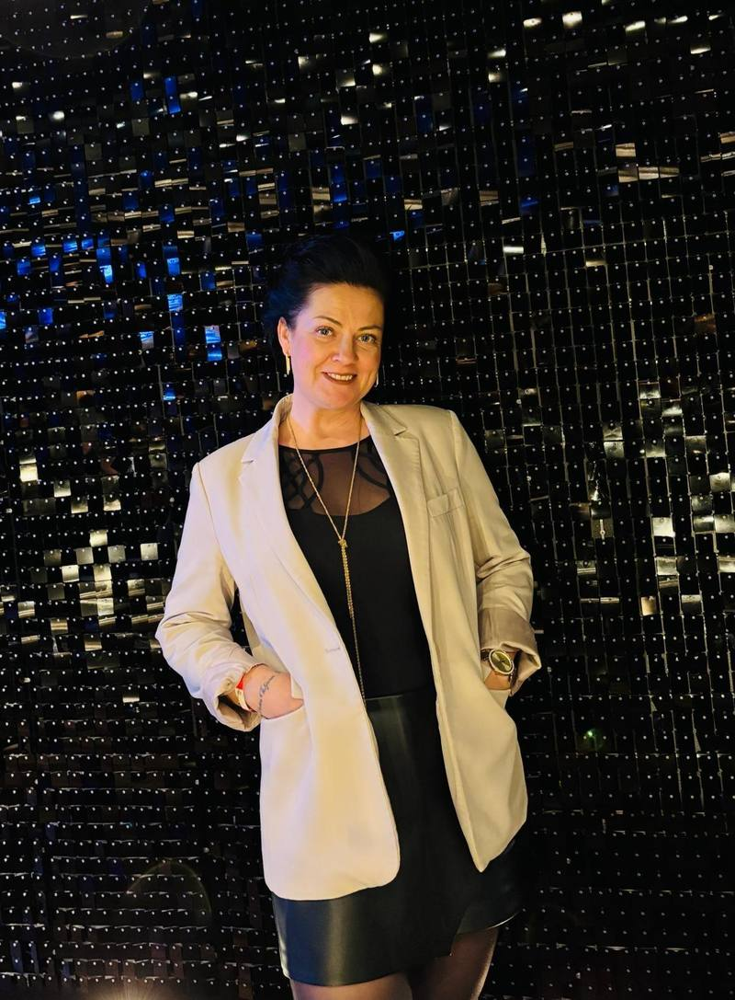

Sie starten neu.
Neue Position, neuer Auftritt, neuer Lebensabschnitt. Sie brauchen Bilder, die zeigen, wer Sie heute sind. Nicht die fünf Jahre alten Aufnahmen aus dem Handy.
Portrait · Natur · Studio · 48336 Sassenberg
Ich bin Maria, Fotografin und Videografin aus Leidenschaft. Ich liebe echte Momente, natürliche Emotionen und kreative Ideen.
Für wen ich fotografiere
Ich arbeite am liebsten mit Menschen, die nicht wegen des perfekten Winkels zum Shooting kommen. Sondern weil sie ein ehrliches Bild von sich brauchen. Für Website, das Familienalbum, das eigene Wohnzimmer, oder einfach als Erinnerung.
Neue Position, neuer Auftritt, neuer Lebensabschnitt. Sie brauchen Bilder, die zeigen, wer Sie heute sind. Nicht die fünf Jahre alten Aufnahmen aus dem Handy.
„Ich bin so unfotogen.“ Höre ich täglich. Nach zehn Minuten ist die Kamera vergessen und Sie sehen ein Bild von sich, das Sie tatsächlich mögen.
An diese Lebensphase. An Ihr Kind, das nächste Jahr schon anders aussieht. An das Paar, das Sie gerade sind. Bilder, die man einrahmt.
Die ersten Wochen und Monate sind im Flug vorbei. Ganz nah, ganz ehrlich, ohne gestelltes Lächeln: Bilder, an die Sie sich in zwanzig Jahren noch erinnern wollen.
Kornfeld, Strohballen, Glyzinie, blaue Stunde am See. Wir warten kurz auf den Moment, in dem die Sonne alles weich macht, und drücken dann ab.
Für Porträts, Familienbilder, Fashion, editorial. Neutrale Rückwand, geführtes Licht, wiederholbare Qualität. Auch wenn Sie in einem Jahr noch ein Bild nachbestellen.
Kein steifes Aufstellen. Wir gehen los, unterhalten uns, ich fotografiere dazwischen. Die schönsten Bilder entstehen, wenn niemand mehr „posiert“.
01 — Leistungen
Drei Leistungen, ein Ansprechpartner. Jede Anfrage bekommt vorab einen individuellen Festpreis.
Vom Getting-ready bis zum letzten Tanz begleite ich Ihren Tag unaufdringlich. Vorab besprechen wir Ablauf und Wunschmotive. Am Tag muss niemand improvisieren.
Reportage · ganztagsVon den ersten Wochen mit Baby bis zum großen Familienfoto: ich begleite Sie unaufdringlich, im Studio oder draußen im Feld. Ehrliche Bilder statt gestellter Pose.
Familie · Baby · PortraitEin Drehtag, aus dem ein Monat Content wird: Kurzvideos im 9:16-Format, Bildpakete, Untertitel. Für alle, die online sichtbar bleiben wollen, ohne selbst zu schneiden.
Reels · Shorts · Content02 — Warum Maria
„Beste Qualität“ und „langjährige Erfahrung“ schreibt jeder. Deshalb hier konkret, was Sie bei mir bekommen und warum das Ergebnis planbar ist.
Kein Rohmaterial-Berg. Sie bekommen Foto und Video fertig fürs Familienalbum, den Social-Media-Auftritt oder das Hochzeitsalbum, in Web- und Druckformaten, mit Nutzungsrechten für den privaten Gebrauch.
Vor dem Shooting klären wir in 20 Minuten Ziel, Bildsprache und Motivliste. Dann fotografiere und filme ich am selben Tag. Ein Termin statt zwei, eine Handschrift statt zwei Looks. Danach Auswahl, Retusche, Übergabe.
Der Preis steht schriftlich vor dem Shooting, keine Nachberechnung. Wetterbedingte Verschiebung kostenlos. Und wenn nach der Vorbesprechung das Bauchgefühl nicht stimmt, sagen Sie kostenfrei ab.
03 — Portfolio
Ein Ausschnitt aus aktuellen Projekten für Familien, Paare und Einzelpersonen aus der Region. Klicken Sie ein Bild an, um es groß zu sehen.
Sie suchen etwas Ähnliches? Schreiben Sie mir kurz Ihr Vorhaben. Ich sage Ihnen ehrlich, ob ich der oder die Richtige dafür bin.
Vorhaben schreiben →04 — Ablauf
Damit Sie wissen, worauf Sie sich einlassen: kein Überraschungspaket, sondern ein Ablauf, den Sie vom ersten Kontakt an kennen.
Sie schreiben mir in zwei Sätzen, worum es geht. Ich melde mich werktags innerhalb eines Tages.
20 Minuten am Telefon oder vor Ort in Sassenberg. Danach bekommen Sie ein schriftliches Angebot zum Festpreis.
Ich bringe Licht, Technik und Plan mit. Foto und Video am selben Tag, damit alles entspannt bleibt und niemand zweimal Zeit einplanen muss.
Sie wählen aus einer Online-Galerie. Die finalen Dateien kommen bearbeitet, in Web- und Druckauflösung, mit Nutzungsrechten.
Ich hatte mich zehn Jahre nicht fotografieren lassen. Nach zwanzig Minuten mit Maria habe ich zum ersten Mal seit langem Bilder von mir, die ich wirklich mag. Und die jetzt in meinem Flur hängen.
Anastasia R. · Portraitshooting im Kornfeld · Warendorf

05 — Über mich
Fotografie und Videografie sind meine Leidenschaft. Ich liebe es, besondere Momente festzuhalten und Erinnerungen zu schaffen, die auch Jahre später noch ein Lächeln ins Gesicht zaubern.
Ich bin ein kreativer Mensch, offen für neue Ideen und experimentiere gerne. Ob klassisch, natürlich oder auch mal etwas Außergewöhnliches – jedes Shooting ist einzigartig. Dabei setze ich nicht nur meine eigenen Ideen um, sondern freue mich auch darauf, die Wünsche und Vorstellungen meiner Kundinnen und Kunden gemeinsam Wirklichkeit werden zu lassen.
Die schönsten Erinnerungen entstehen gemeinsam – lasst sie uns festhalten.
07 — Häufige Fragen
Das hängt vom Umfang ab. Deshalb bekommen Sie nach dem kostenlosen Erstgespräch ein schriftliches Angebot zum Festpreis. Darin steht, wie lange ich vor Ort bin, wie viele finale Bilder Sie bekommen und welche Nutzungsrechte enthalten sind. Es gibt keine Nachberechnung und keine versteckten Bearbeitungspauschalen.
In der Regel innerhalb von 14 Tagen, bei Familienshootings und Social-Media-Content oft schneller. Hochzeiten planen wir meist mehrere Monate im Voraus. Fragen Sie deshalb früh an, auch wenn noch nicht jedes Detail feststeht.
Eine Vorauswahl als Online-Galerie erhalten Sie innerhalb von drei Werktagen, die bearbeiteten Endfassungen in 10 Werktagen. Wenn Sie einzelne Bilder eilig für eine Anzeige oder Pressemeldung brauchen, liefere ich sie vorab.
So, wie es zu Ihnen passt. Im Studio in Sassenberg arbeite ich mit kontrollierter Lichtstimmung, gut für Porträts und klare Editorial-Looks. Outdoor gehen wir in Feldmark, Wald oder an Ihren Wunschort, wenn das Umgebungslicht die Bildsprache tragen soll. Auch vor Ort bei Ihnen zu Hause bin ich regelmäßig unterwegs. Die Frage nach dem Ort klären wir im Erstgespräch entlang Ihres Anlasses.
Ja, das ist der Normalfall, nicht die Ausnahme. Wir starten mit ein paar Aufnahmen zum Warmwerden, die niemand sehen muss. Ich gebe klare, einfache Ansagen zu Haltung und Blick, damit Sie nicht raten müssen. Die meisten sagen nach zehn Minuten, dass es leichter war als gedacht.
08 — Kontakt
Zwei Sätze reichen: Was haben Sie vor, und bis wann brauchen Sie das Ergebnis? Ich melde mich werktags innerhalb von 24 Stunden, mit einer ehrlichen Einschätzung, auch wenn ich nicht die richtige Wahl bin.


{kind=link}
{kind=link}
{kind=link}
{kind=link}
{kind=link}
{kind=link}
{kind=link}
{kind=link}
{kind=link}
{kind=link}
{kind=link}
{kind=link}